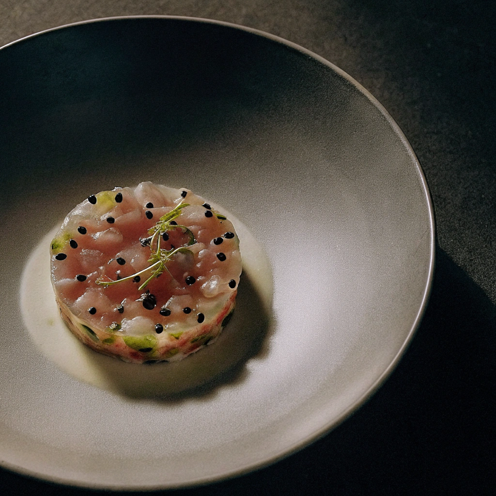

凪
NAGI
an omakase companion
{{ phase }}
{{ s.n }}
{{ s.label }}
Technology should accompany the meal, not interrupt it.
凪
{{ p.num }}
7:41
•••
凪
NAGI
Sixteen courses. Ten seats. One counter.
Chef Ren Asakura trained in Kanazawa and has worked this counter since 2019. There is no menu. There has never been one.
Reserve an evening
41 Kenmare Street, New York
7:41
•••
‹
Reserve
凪
Choose an evening
September 2026
Wed
16
Thu
17
Fri
18
Sat
19
Sun
20
Greyed evenings are fully seated.
Seating
5:30 PM
First seating
7:30 PM
Second seating
Guests
−
{{ guests }}
+
Continue
7:41
•••
‹
Friday 18 · {{ time }}
Choose your seat
Ten seats. The chef works the middle.
{{ st.num }}
Counter seat
you
{{ st.num }}
Taken
{{ st.num }}
Counter seat
{{ st.note }}
Seat {{ seatNum }} · Continue
7:41
•••
‹
Seat {{ seatNum }}
Anything we should know?
The menu is fixed. The chef will work around whatever you tell us.
Allergies
{{ a.label }}
Occasion
Celebrating something? Tell the chef here.
Confirm reservation
7:41
•••
凪
YOUR OMAKASE
Tonight, you leave the menu to us.
Date
Friday, September 18
Time
{{ time }}
Seat
Counter {{ seatNum }}
Menu
Sixteen courses
Guests
{{ guestWord }}
Noted
{{ allergyCount }} allergies
Service has begun
THE APP DARKENS AT THE COUNTER
8:12
•••
Progression
Remembered · {{ savedCount }}
{{ label }}
{{ name }}
{{ kanji }}
{{ en }}
{{ desc }}
Where it comes from →
‹
♡
Remember this one
♥
Remembered
›
8:12
•••
×
{{ name }}
{{ kanji }}
Origin
{{ origin }}
Preparation
{{ prep }}
Season
{{ season }}
Course
{{ num }} / 16
{{ desc }}
8:12
•••
Tonight
What comes next stays hidden.
×
{{ r.num }}
{{ r.name }}
{{ r.kanji }}
♥
The chef sets the pace
8:12
•••
Remembered
Yours to keep after service.
×
{{ p.name }}
{{ p.en }} · {{ p.origin }}
{{ p.num }}
Nothing yet. Tap the heart when something stays with you.
Service has ended
10:24
•••
YOUR OMAKASE
September 18, 2026
16
courses
2:40
at the counter
{{ seatNum }}
your seat
You remembered
{{ p.name }}
{{ p.en }} · {{ p.origin }}
{{ p.num }}
You kept nothing this time. The evening is recorded all the same.
凪
Chef Ren Asakura
Keep
9:12
•••
Journal
New York · twelve evenings · 31 pieces remembered
2026
Nagi
September · 16 courses · {{ savedCount }} remembered
›
Kaze
July · 12 courses · 2 remembered
›
Shizuku
April · 18 courses · 5 remembered
›
2025
Nagi
November · 16 courses · 2 remembered
›

Hakuun
February · 14 courses · 4 remembered
›
Every evening you sit at a counter is added here, whether or not you remembered anything.
9:12
•••
‹
Nagi
November 14, 2025 · Counter 09 · 16 courses
You remembered
Kohada
Gizzard shad · Saga
♥
Anago
Sea eel · Tokyo Bay
♥
The whole menu
01
Tai
09
Sawara
02
Sumiika
10
Uni
03
Aji
11
Botan Ebi
04
Akami
12
Hotate
05
Chūtoro
13
Nodoguro
06
Ōtoro
14
Anago ♥
07
Kinmedai
15
Wagyū
08
Kohada ♥
16
Tamago
The kohada that night was cured a day longer than usual. You asked about it.
{{ hint }}
Restart